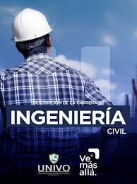
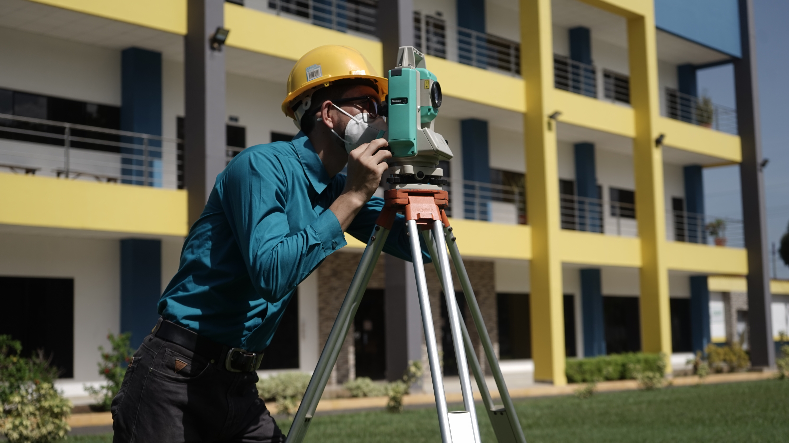

Descripción
La Ingeniería Civil es una profesión que tiene como visión el desarrollo económico y social, por medio de la construcción de obras que aumenten la calidad de vida.
Modalidad
SemiPresencial
Duración
5 años (10 ciclos)
📚 Matrícula abierta | Ciclo 01-2025🌟
💡 Edúcate con los Mejores.